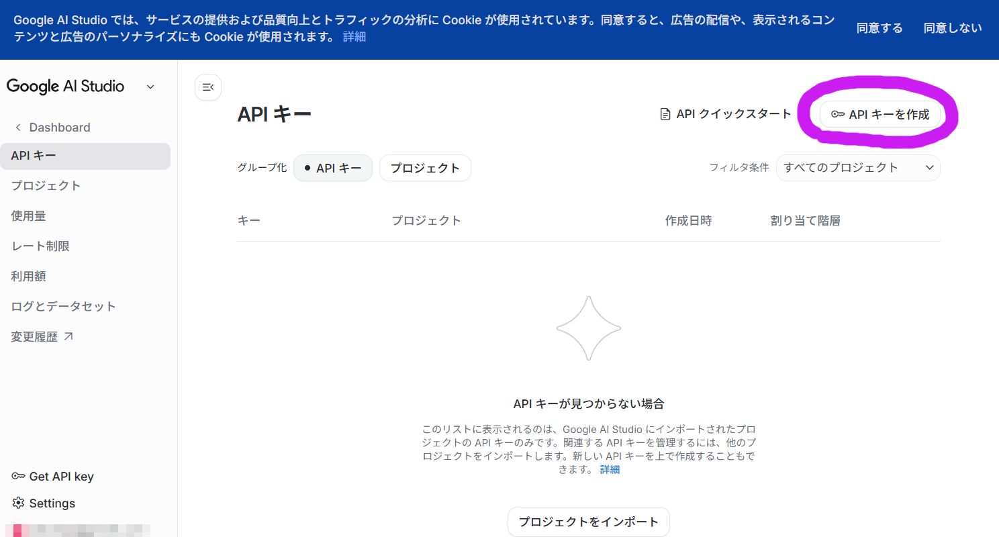
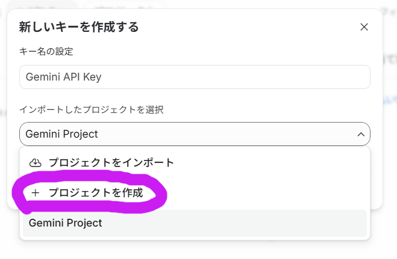
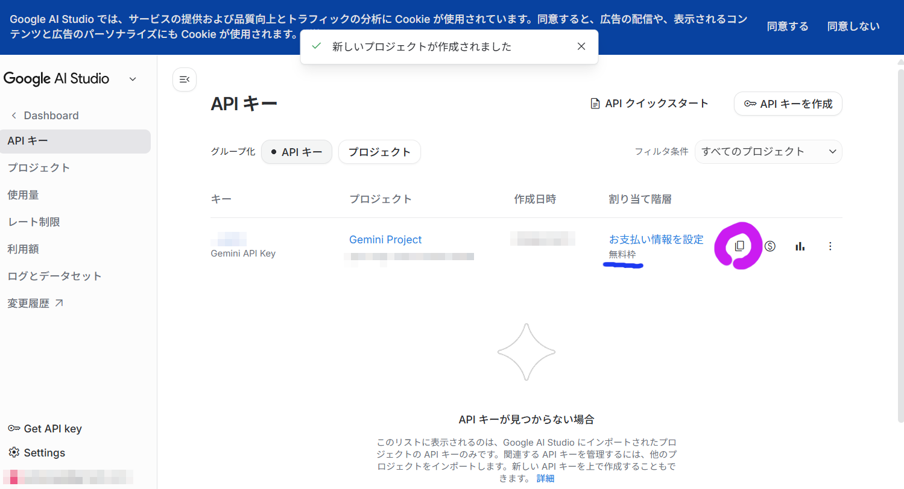

このレイヤーでは、AIを使ってレイヤー検索を行います。 そのためGoogleのAI「Gemini」を利用します。
Geminiを使うには、利用者ごとに「APIキー」という合言葉を設定する必要があります。
このページでは、この「APIキー」を取得する手順を解説します。
Googleアカウントがあれば、クレジットカードの登録なしで、無料枠の範囲のAPIキーが取得できます。
まずは、以下のボタンをクリックして、Google AI StudioのAPIキー取得ページを開いてください。Googleアカウントのログイン画面が出た場合は、ログインしてください。
画面が開いたら、右上にある紫の丸で囲った「APIキーを作成」ボタンをクリックします。

APIキーを作るには、それを入れておくための「箱（プロジェクト）」が必要です。
新しい画面が出たら、「インポートしたプロジェクトを選択」の下向き矢印（▼）をクリックします。
メニューが開くので、紫の丸で囲った「＋ プロジェクトを作成」をクリックしてください。
（名前などは変更しなくてOKです！）

しばらく待つとキーが作成され、元の画面に戻ります。
青い線で引いた部分に「無料枠」と表示されていることを確認してください。ここが無料枠になっていれば、お金はかかりません。
確認できたら、紫の丸で囲った「コピーボタン（四角が2つ重なったマーク）」をクリックして、APIキーをコピーしてください。

これで完了です！
元のアプリ画面に戻り、コピーしたキー（AIza...から始まる長い文字列です）を貼り付けてお使いください。